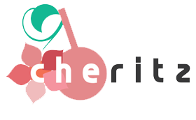

Introduce
Cheritz was founded on February 2012 in South Korea with the goal of designing and providing Asian style female-oriented games for their consumers. With the reasoning that many more females having an increasing in their economic status as compared with past history, there would be a higher demand for social content that they would be able to indulge in. With that in mind, Cheritz has set themselves a goal to develop female-oriented games that would satisfy this demand. As well as this, they hope to provide products that can be enjoyed by female gamers all over the world (not just Asian females as most would assume would be the only consumers of Asian style games) and also hope the gameplay will be a moving experience.
Purpose
Cheritz develops games that can be enjoyed by anyone (especially females) who are looking for creative Asian style games. They research data on many different female-oriented games and are willing to listen to the voices of female gamers. In simpler terms, they strive to develop enriching and entertaining female-oriented games that can satisfy the demands of their target audience.
Cheritz pursues a work environment that is respectful towards everyone; striving to listen to each other in a horizontal position regardless of age, education, experience, and nationality..
Distribution
The demand for female-oriented games is not just limited to South Korea. Cheritz distributes products to Asian countries including Japan, and China and tries to expand to Western countries. The distributions are made online, and often provide translations in certain languages other than Korean in order to achieve this.
Games
Thus far, Cheritz has released four games:
Dandelion
Dandelion is an Asian-style game that is categorised as a visual novel and dating simulation game. A 21-year-old girl who pushes herself to be perfect at everything, Hee-Jung, realises that she does not know what she really desires in her life. Although she lives a hectic life, she feels like she is on the road to nowhere. However, one day she encounters mysterious animals and decides to take them in. She doesn't yet realise that this would radically change her life...
Nameless~ The only thing you must recall ~
Eri, the main protagonist, is an ordinary-looking freshman who attends Crobi Academy. With her parents working as researchers at overseas, she is left all alone at her grandparents' house after her grandfather's death. Being left by herself, "Eri" continues to obsess over her ball-jointed dolls without being able to tell anyone, even her friends, about her hobby.
Mystic Messenger
You were looking for a game app just to kill some time and stumbled upon an app called "Mystic Messenger". It sounded interesting, so you downloaded it and soon found yourself chatting with someone nicknamed "Unknown". They persuaded you to go to some studio apartment, and as soon as you unlocked the door and walked into to the apartment, your app is suddenly connected to a mystic group chat with attractive guys!? After a long chat, they ask you to join their secret party planning association called the R.F.A...
The Ssum
Spark a special relationship with somebody who will never leave you. Enjoy new messages and phone calls with him every day. Your special day will start with The SSUM! Enjoy new chats and phone calls every day. Your special Ssum-one will send you new pictures every day. Your special Ssum-one will wait for you to wake up and go to bed! Share your daily life with him. See how your relationship grows as time passes!